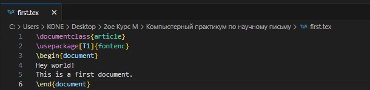
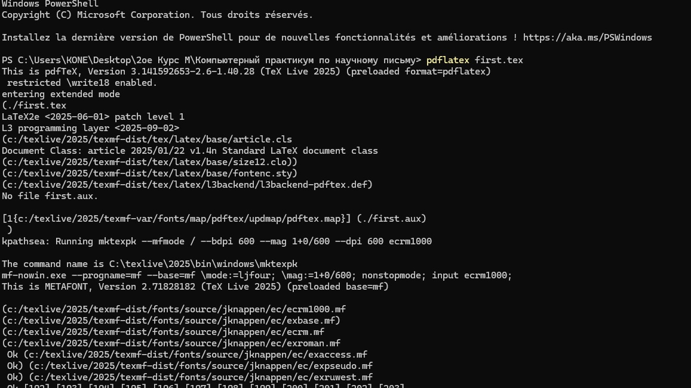
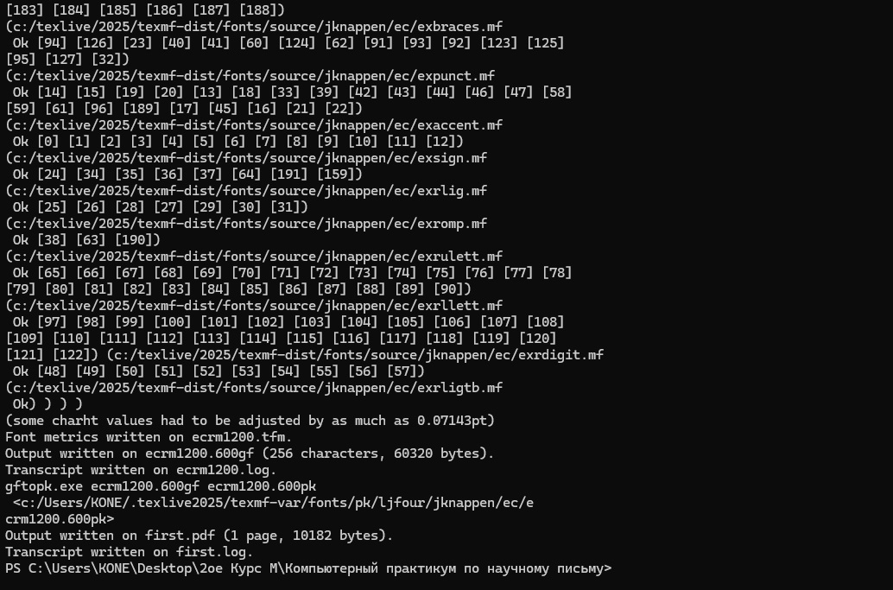
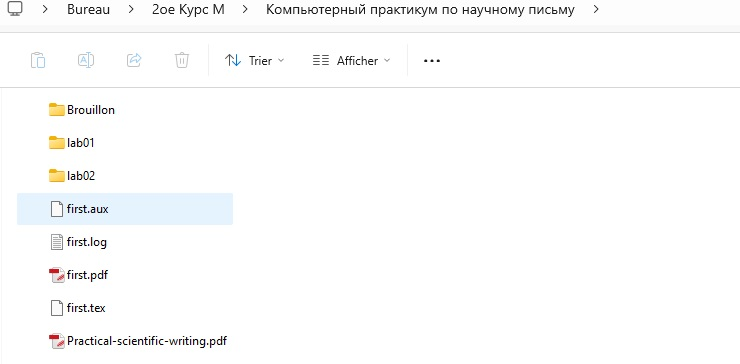
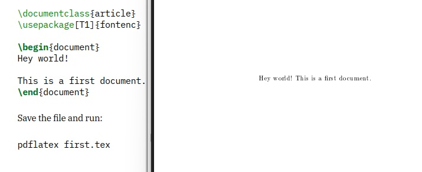
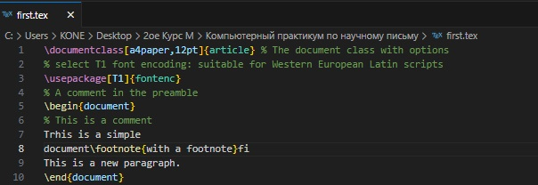
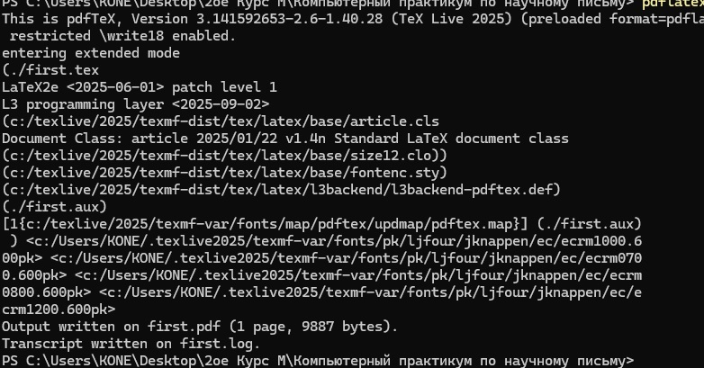
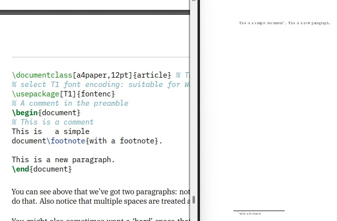
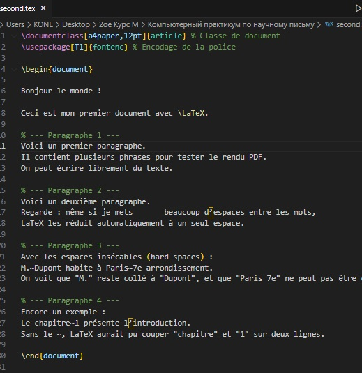
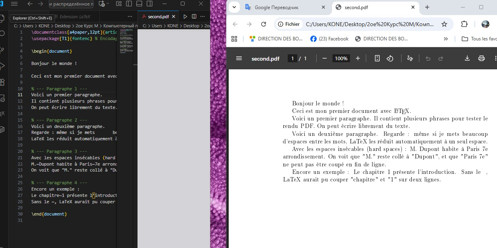

{ #fig:005 width=100% }
{ #fig:005 width=100% }Целью данной лабораторной работы является ознакомление с работа с структура документа Latex
Задачи: Рассмотреть и работа с документа структура TexLive:
\documentclass{article}
\usepackage[T1]{fontenc}
\begin{document}
Hey world!
This is a first document.
\end{document}
(см. Рис. [-@fig:001]).

{ #fig:001 width=100% }(см. Рис. [-@fig:002]).

{ #fig:002 width=100% }(см. Рис. [-@fig:003]).

{ #fig:002 width=100% }(см. Рис. [-@fig:004]).

{ #fig:002 width=100% }(см. Рис. [-@fig:005]).

{ #fig:003 width=100% }\documentclass[a4paper,12pt]{article} % The document class with options
% select T1 font encoding: suitable for Western European Latin scripts
\usepackage[T1]{fontenc}
% A comment in the preamble
\begin{document}
% This is a comment
Trhis is a simple
document\footnote{with a footnote}fi
This is a new paragraph.
\end{document}
(см. Рис. [-@fig:006]).

{ #fig:003 width=100% }(см. Рис. [-@fig:007]).

{ #fig:003 width=100% }(см. Рис. [-@fig:008]).

{ #fig:003 width=100% }(см. Рис. [-@fig:009]).

{ #fig:002 width=100% } \documentclass[a4paper,12pt]{article} % Classe de document
\usepackage[T1]{fontenc} % Encodage de la police
\begin{document}
Bonjour le monde !
Ceci est mon premier document avec \LaTeX.
% --- Paragraphe 1 ---
Voici un premier paragraphe.
Il contient plusieurs phrases pour tester le rendu PDF.
On peut écrire librement du texte.
% --- Paragraphe 2 ---
Voici un deuxième paragraphe.
Regarde : même si je mets beaucoup d’espaces entre les mots,
LaTeX les réduit automatiquement à un seul espace.
% --- Paragraphe 3 ---
Avec les espaces insécables (hard spaces) :
M.~Dupont habite à Paris~7e arrondissement.
On voit que "M." reste collé à "Dupont", et que "Paris 7e" ne peut pas être coupé en fin de ligne.
% --- Paragraphe 4 ---
Encore un exemple :
Le chapitre~1 présente l’introduction.
Sans le ~, LaTeX aurait pu couper "chapitre" et "1" sur deux lignes.
\end{document}
(см. Рис. [-@fig:010]).

{ #fig:003 width=100% }{ #fig:005 width=100% }
(см. Рис. [-@fig:011]).
 { #fig:005 width=100% }
{ #fig:005 width=100% }
Таким образом, была достигнута цель установил TeXlive, я познакомелся с работа с его структуры а также с системой LaTeX.
Спасибо за внимание